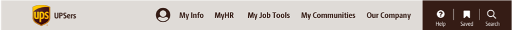
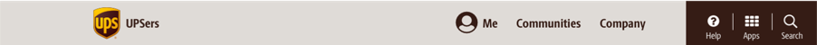
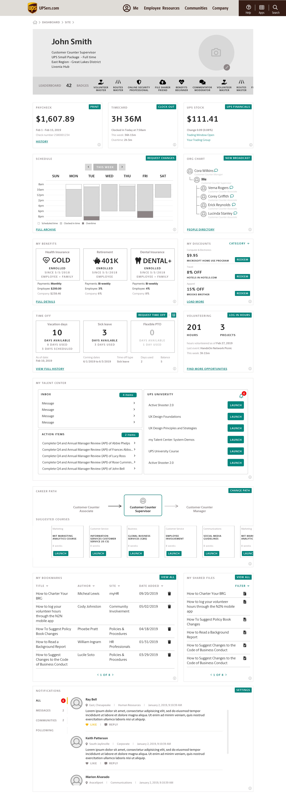
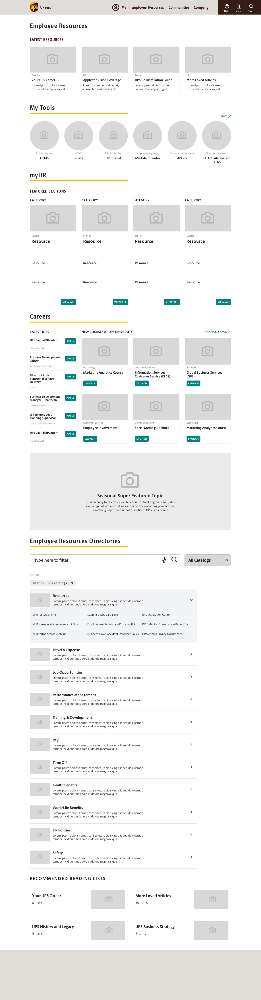
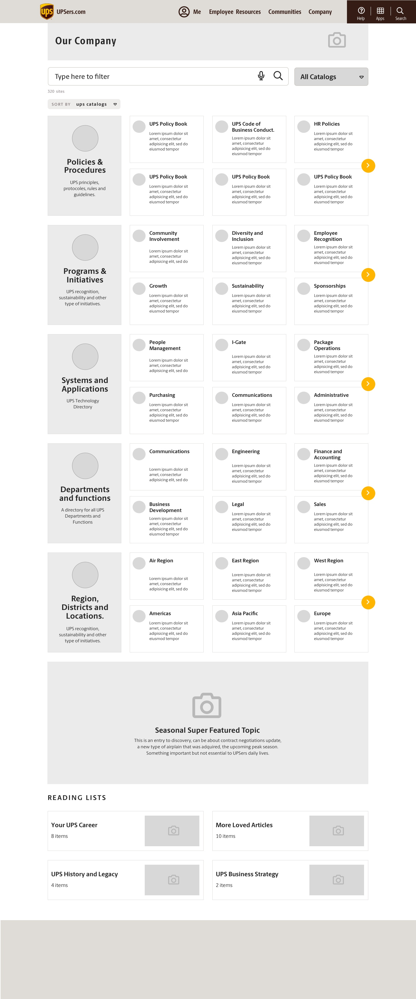
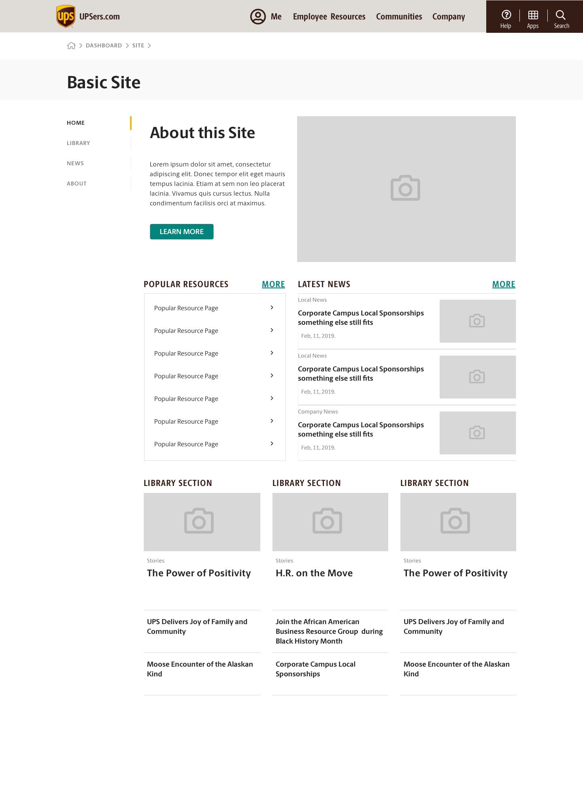
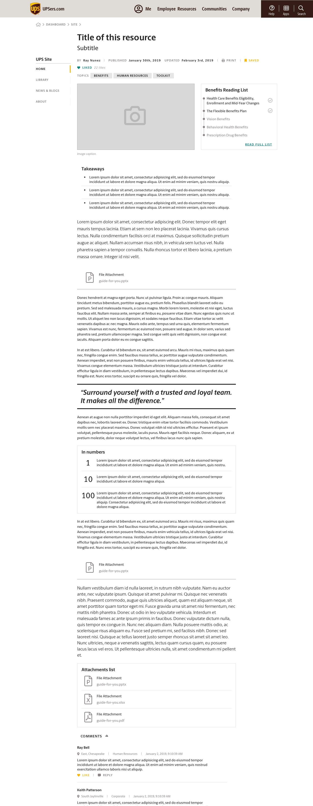
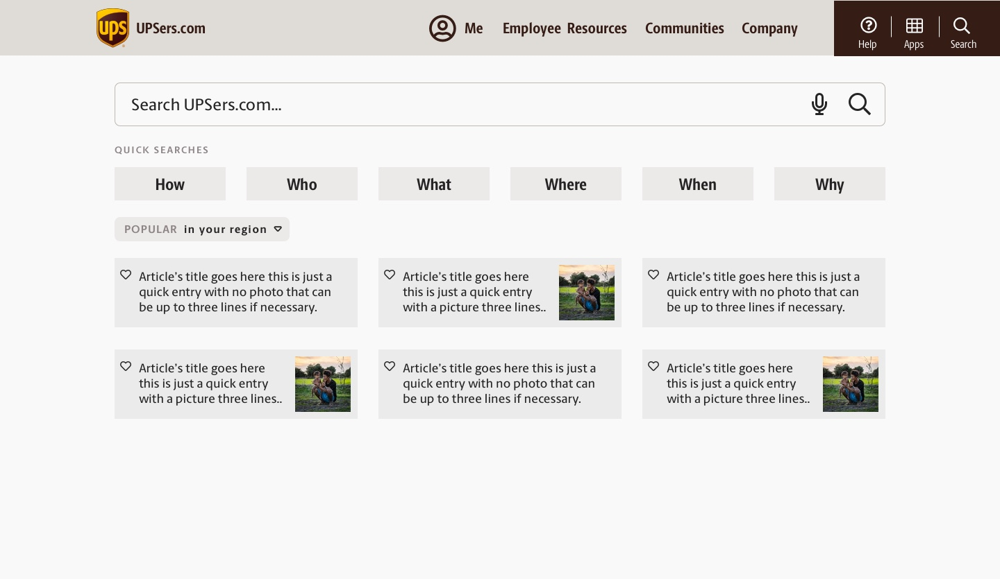

Goal
To create a design proposal for a completely new UPSers portal.
My Role
UI / UX Designer
Activities
Technical requirements
Technology agnostic. Desktop view focused, mobile second.
We interviewed 6 UPS Content Authors (4 from the U.S. and 2 international authors) to gather their input about the current structure of the portal and the inner workings of the CMS. Learning about their experience was necessary to develop an all-inclusive portal experience for both authors and readers.
Empathy Map
Say
- “(CMS) it’s big and cumbersome.”
- “so many things to nitpick”.
- “I’m comfortable.”
- “… the whole technical side is foreign to me”.
- “(There’s) no room to be creative”.
Do
- Authors do their own researching, writing, editing, and publishing.
- Copy/paste text from Microsoft Word to the CMS before publishing.
- Manage to create and edit several articles at the same time.
Think
- The platform should work more like an image or word program (like Wordpress, InDesign, etc.).
- It’s difficult to edit the visual style of the articles and adding media.
- There is a need for an onboarding process for newcomers.
Feel
- The platform has gotten better, but there is a lot of room for improvement.
- The publishing platform requires a long time to learn and to get used to.
- Frustration when learning to use the platform.
- The authoring process should be simple.
The objective for this research effort was to gather general impressions about UPSers.com, top needs and top pain points. We send a survey to 611 participants (288 in management positions and 323 in non-management positions).
This survey was divided into two efforts, first to 421 participants in the U. S. and then 190 participants around the world (limited to three languages due to time-constraints).
General findings
Satisfaction
Level of satisfaction with UPSers.com is acceptable, although there are areas that frustrate users.
Customization
There is a need for customization of quick links as well as types of news, images and stories that users want to see.
UPS Info
Users would like to have easier access to more information like company directories, policies, and retirement plans.
My content
UPSers want access to relevant and up to date content, in their language, and personalized to their job role.
Pain points
- Search performance
- Findability
- Navigation
- Login process and password reset
We made a card-sorting exercise where we were looking to understand how UPSers group topics together. This exercise was applied to 217 participants based in the U. S.
We used Userzoom to gather the results and to create a dendogram.
General findings
Categories
The average number of categories created by users was 6, the maximum was 8.
Clusters with MORE agreement
- Departments
- Regions
- News
Clusters
- Departments, regions, and business units
- News
- Company – About UPS
- Human Resources –HR
- Help and Support
Clusters with LESS agreement
- Company
- Human Resources (some topics)
- Help and Support
Navigation models
Incremental
This model presents one step forward from current state based on a first person language approach (how the user talks).
Consolidated
Consolidation of current sections to integrate a concept-based approach (employee data, collaboration and company information).
Constructivist
The model is based on how a person constructs meaning: first, the individual level, then at the close group level and finally at the company level.
Sitemap
We performed high-level user tests to 6 U. S. based employees.
The favored navigation model was the Consolidated menu and it was approved by our client.
Home

User profile
Catalog A
Catalog B
Site
Content page
Search
The mockups were presented in a clickable prototype in the platform Invision (available only for the client).